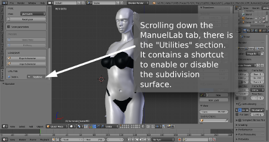
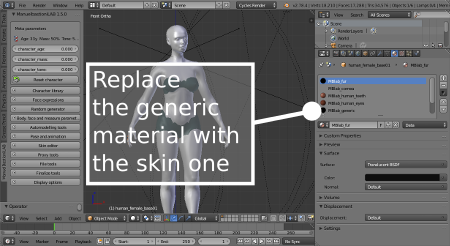

Tips
Subdivision surface
The topology is optimized to work in subsurface mode, but this option is disabled by default in order to start with a minimal hardware requirement. To turn it on, you can use the Blender modifiers tab or, if you prefer, the handy toggle in the Lab.

Remove the censor
In order to be 100% worldwide "safe for work", all lab characters do not include genitalia. Also the pelvis area and the female breast are covered with a black censor material.
If it's required to remove the censor, it can be done simply replacing the black material with the skin material in Blender panel.

Upgrade characters
If you have created a character with an old version of the lab and you want to upgrade it, you have just to export it as json data (using the old lab) and then import it in the new lab. More info here.